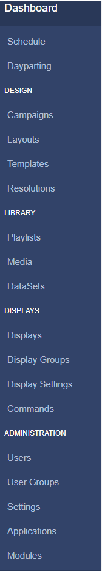

Navigation
All CMS pages are categorised into sections and are accessible from the CMS Main Menu for ease of navigation. This menu can be placed vertically on the left hand side or horizontally along the top of the CMS, based on User Preference.
If you are using 1.8 the menu will only be placed vertically on the left hand side as standard.

The menu will only show the items each User has been given permission to see!
Dashboard
This is a direct link to the logged in Users assigned Dashboard (homepage).
Schedule
Create, view and manage Events for each Display in your signage network. Create your own Dayparts to include when scheduling events.
Design
Create and manage Layouts / Campaigns and utilise Templates.
Library
Create reusable Playlists and store file-based Media for re-use and design. Store tabular data using DataSets.
Displays
The Display section contains all pages needed for managing connected Displays.
Administration
Manage all Users/User Groups, CMS Settings and Modules.
Reporting
View Display statistics and Proof of Play reports as well as Library Usage by User/User Group.
Advanced
Log and Session information as well as Audit Trail's and Fault Reporting.
Profile Icon
Located in the top right-hand corner of the CMS, the Profile Icon is used to access User-specific data and set User Preferences.
Users can set their Preference as to where they would like the Navigation Menu to be positioned as well as decide to use the Library duration rather than the default Module duration for media items.
All new users are strongly advised to navigate to the Profile Icon menu to change their password the first time they log into the CMS.